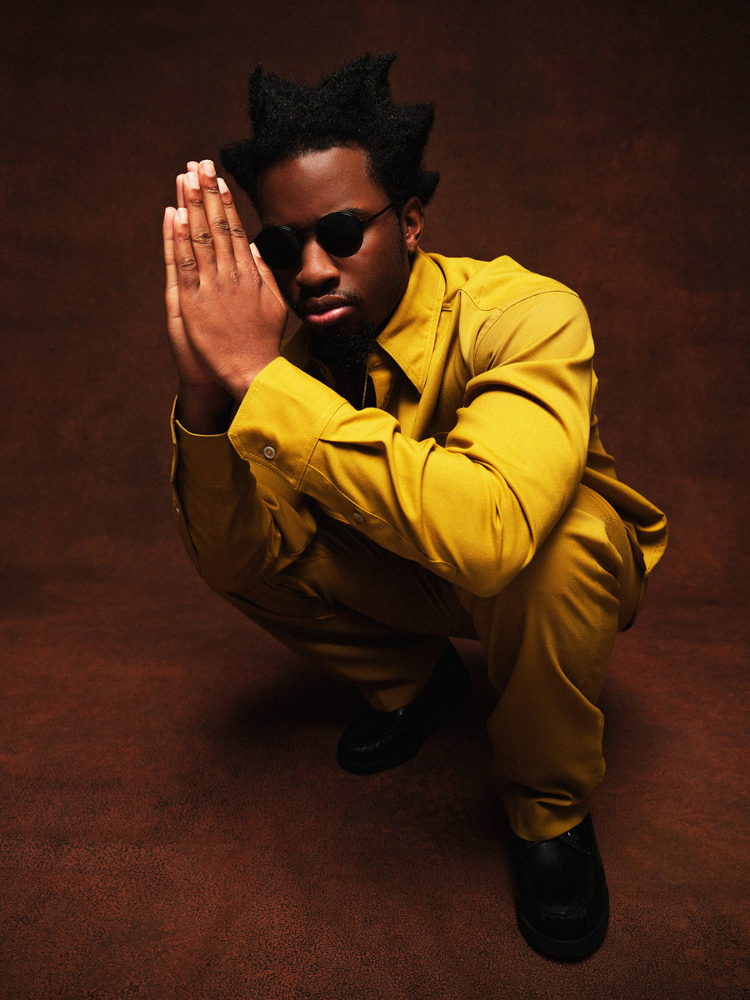

Denzel Rae Don Curry (born February 16, 1995) is an American rapper. Born and raised in Miami Gardens, Florida, Curry started rapping while in the sixth grade and began working on his first mixtape, King Remembered Underground Tape 1991–1995, in 2011, which was influenced by underground Florida rapper SpaceGhostPurrp. The mixtape was later featured on SpaceGhostPurrp's social media, giving Curry attention in the local music scene and resulting in him joining the former's hip-hop collective Raider Klan.
